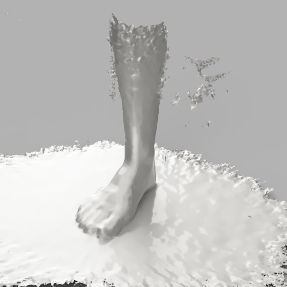
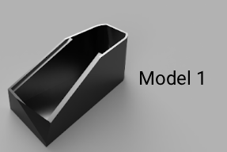
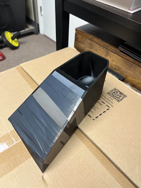
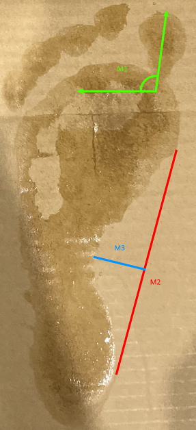

Procedure
The procedure shows how the shoes were designed, 3D printed, assembled, and tested by measuring the feet during use.
Step |
Description |
Image |
|---|---|---|
1 |
Measure and scan feetTake key foot measurements and create 3D scans using Foot Scan 3D. |
 |
2 |
Design shoeModel the transitional shoe, including the wide toe box, zero-drop insole, and kinetic sand insole, in Autodesk Fusion. |
 |
3 |
Prepare 3D print filesExport models as STL files and set up print parameters in Bambu Studio. |
|
4 |
3D print componentsPrint the shoe base, top, and insole using TPU filament. |
 |
5 |
Assemble shoeFill the insole with kinetic sand, insert it into the base, attach the top, and secure with tape. |
 |
6 |
Test shoeWear the shoes for one week and record foot measurements daily, including bunion angle and arch distances. |
 |
7 |
Analyze dataCalculate changes, compare to control shoes, and evaluate effectiveness of the transitional shoe. |